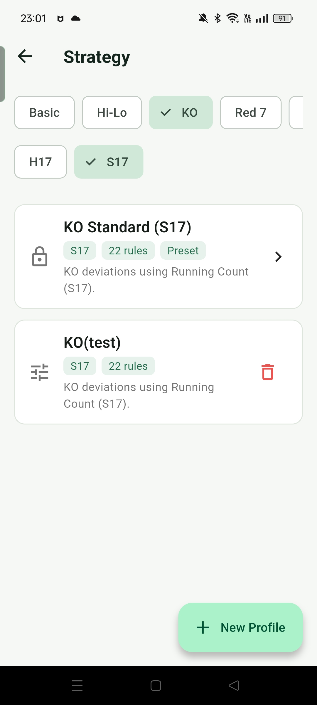
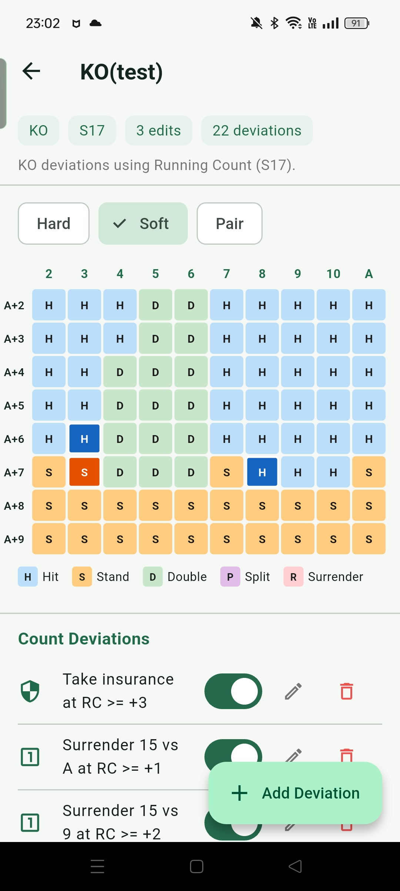
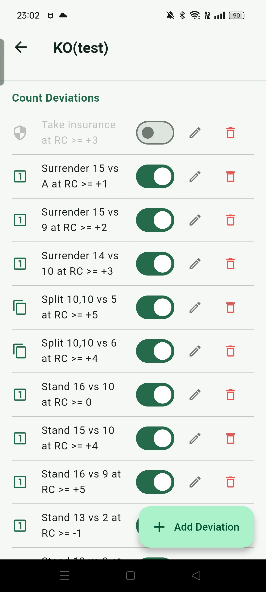

戦略
戦略機能では、各カウントシステムに対して deviation ルールセットをカスタマイズできます。プリセットの index spec に限らず、システムのプリセットをコピーして個々のルールを修正し、異なる index しきい値が判断に与える影響をテストできます。
戦略ページとシステム選択
戦略ページ上部でカウントシステムを切り替えられます：Basic、Hi-Lo、KO、Red 7、FELT、Zen、Hi-Opt I、Omega II と H17 / S17 フィルター。各システムはディーラールールごとにプリセット戦略を持ち、ロックされた「Preset」カードとして表示されます。
プリセット戦略はアプリのゲームとトレーニングモードにプリロードされた index spec に対応しており、完全な deviation ルールテーブルを確認できますが編集はできません。ルールを変更するにはカスタム戦略を作成する必要があります。

カスタム戦略の作成
右下の「戦略を追加」をタップして名前を入力すると、現在選択しているシステムと H17/S17 設定のプリセット戦略をベースに新しい編集可能な戦略がコピーされます。作成後すぐに編集に入ることも、後から変更することもできます。
カスタム戦略カードの右側に削除ボタンがあり、不要になった戦略を削除できます。プリセット戦略は削除できません。
戦略ルールの確認と編集
戦略を開くと、Hard / Soft / Pair タブ別のルールテーブルが表示されます。列がディーラーのアップカード（2–A）、行がプレイヤーのハンド合計に対応し、各セルに現在のアクション（ヒット、スタンド、ダブル、スプリット、サレンダー）が表示されます。カスタム戦略では、デフォルトの基本戦略と異なるセルが色付きで表示されるため、変更した状況を一目で確認できます。
セルをタップするとルール編集画面が開き、以下を設定できます：
- 手札タイプ：Hard、Soft、Pair、Insurance
- ディーラーアップカード：2–10 または A
- プレイヤーハンド合計（Insurance は不要）
- TC / RC しきい値：このルールを発動させるカウント条件
- 比較方向：>= または <
- 上書きアクション：条件が満たされたときに実行するアクション
- メモ（任意）：このルールの出典や理由を記録


カスタム戦略をゲームに適用
カスタム戦略を作成したら、Settings の「Advisor mode」セクションでドロップダウンから戦略名を選択します。ゲームと Decision Training がカスタムルールに基づいてアドバイスを提供します。「Default」を選択するとシステム内蔵のプリセット index spec に戻ります。
使用シナリオ
異なる Index のテスト
deviation のしきい値を上下させて、Game モードと Decision Training での発動頻度の変化を観察します。
簡略版 Spec
プリセットから低頻度または覚えにくい deviation を数個削除して、現在の記憶容量に合った簡略版を作成し、段階的に復元します。
異なる資料との比較
書籍や他のツールで異なる index 値を見つけた場合、プリセットをコピーして 1 つずつ対照しながら変更し、アプリで差異を検証します。